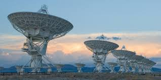

|

Uzaylı Yaşam Olasılığı ve SETI Projesi
Evrenin büyüklüğü düşünüldüğünde, Dünya dışındaki yaşam olasılığı insanlığın en merak ettiği konulardan biridir. Milyarlarca galaksi, trilyonlarca
yıldız ve sayısız gezegen varken, sadece Dünya’da yaşam bulunması olasılığı birçok bilim insanına göre oldukça düşüktür. Bu nedenle “uzaylı yaşam” konusu
hem bilimsel hem de felsefi tartışmaların merkezindedir.
Bilim insanları, yaşamın ortaya çıkması için su, uygun sıcaklık ve kimyasal bileşenler gibi belirli koşulların gerekli olduğunu düşünür. Bu koşulların
bulunduğu ötegezegenler (Güneş sistemi dışındaki gezegenler) teleskoplar aracılığıyla araştırılmaktadır. Mars, Europa (Jüpiter’in uydusu) ve Enceladus
(Satürn’ün uydusu) gibi gök cisimleri de yüzeylerinde ya da buz tabakalarının altında mikrobiyal yaşam izleri barındırma ihtimali nedeniyle özel ilgi
görmektedir.
Bu alandaki en önemli bilimsel çalışmaların başında SETI (Search for Extraterrestrial Intelligence) projesi gelir. SETI, uzaydan gelen radyo sinyallerini
analiz ederek zeki yaşam formlarının varlığına dair kanıtlar arar. Dev radyo teleskoplar aracılığıyla farklı yıldız sistemlerinden gelen sinyaller dinlenir
ve doğal kaynaklı olmayan düzenli frekanslar incelenir.
Bugüne kadar uzaylı yaşamın kesin bir kanıtı bulunamamıştır. Ancak bu durum, arayışın gereksiz olduğu anlamına gelmez. Aksine, evrenin genişliği ve
keşfedilmemiş bölgelerin çokluğu, olasılığın hâlâ yüksek olduğunu gösterir.
Sonuç olarak, uzaylı yaşam arayışı yalnızca bilimsel bir merak değil, aynı zamanda insanlığın evrendeki yerini anlama çabasıdır. Eğer bir gün başka
bir gezegende yaşam keşfedilirse, bu keşif insanlık tarihindeki en büyük dönüm noktalarından biri olacaktır.
|